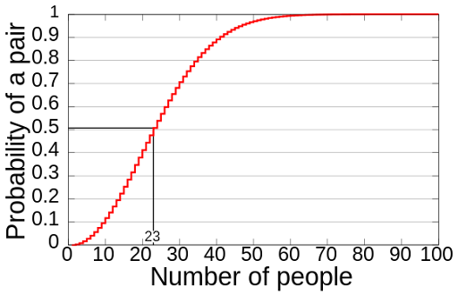

Hi, I'm Christian Schwerer, a Computer Science student at the University of San Diego. Born a San Diego local, I moved back to my hometown with my wife in 2023 after 8 years in the Army. I am ultimately interested in cybersecurity and will be enrolling in the Masters in Cybersecurity Engineering Program at USD in 2026.
A retired Army Medical Services Officer, I am now pursuing a career in computer science to better appeal to my personal and professional interests. To begin this transition, upon leaving the military I earned the CompTia Network+ and Security+ certifications. I chose to go back to school to build a strong foundation and gain experience with multiple programming languages.
I am proud to say I have surfed over 5 times in my life, earning my credentials as a San Diego native. I also really enjoy motorcycle riding and hiking.
Projects

Calculating the Birthday Paradox
The Birthday Paradox is a classic probability puzzle that asks how many people need to be in a room before two of them are likely to share the same birthday. Most people assume the number must be very large, but probability behaves differently than our intuition suggests. This project uses simulation to demonstrate how quickly the probability increases as the group size grows, helping make an unintuitive idea easier to understand.
My program simulates groups of people and assigns each person a randomly generated birthday. It repeats this process many times—20 trials for each group size—and checks whether any two people in the group share the same birthday. The simulation runs for group sizes ranging from 5 to 100 people. For each group size, the program calculates the percentage of trials in which a shared birthday occurred. This allows users to see how the probability changes as the number of people increases.
I implemented the core simulation using a modular, object‑oriented design. The Simulator class manages the overall workflow by iterating through group sizes and printing results. The Experiment class runs multiple trials and calculates the percentage of repeated birthdays. Each Trial generates an array of Birthday objects and checks for duplicates, while the Birthday class uses a shared Random object to create realistic month/day combinations. Throughout the project, I focused on clear structure, meaningful naming, and separating responsibilities across classes to keep the code easy to read and maintain.
This project strengthened my understanding of probability and randomness. I practiced designing modular classes, passing shared resources like Random through constructors, and writing code that cleanly separates responsibilities. Overall, the project helped me improve both my technical skills and my ability to communicate a technical idea to a general audience.

Elevator Simulator
This project simulates how different types of elevators respond to passenger movement requests inside a building. The system models four elevator types—Standard, Freight, Penthouse, and Express—each with unique behavior rules. A user selects the building height, the number of each elevator type, the scheduling strategy, and the list of calls to process. The simulator then runs rounds until call completion, assigning calls, moving elevators, and printing the state of the system. The project emphasizes object oriented design, planning with UML diagrams, and test‑driven development while collaborating with a partner.
Functional Requirements
This simulator models how a real building might coordinate multiple elevators with the following logic:
• The user chooses the building height, the number of each elevator type, the scheduler logic, and the list of calls to process.
• The simulation runs in rounds. Each round updates elevator positions, directions, and assigned calls.
• A scheduler assigns calls to elevators based on the chosen strategy (Simple or Complex).
• Elevators follow both shared rules and individual behavior (for instance, Express elevators only serve upper floors).
• Each round prints the elevator type, current floor, direction, assigned calls, number of occupants, and any unassigned calls.
• The simulation ends only when all calls have been completed and all elevators return to floor 1 with no remaining tasks.
Design
The system is built around strong object‑oriented design. We use abstraction and inheritance through abstract classes for both Elevator and Scheduler, allowing shared behavior while enabling each subclass to override methods for specialized logic.
Polymorphism appears in how different elevator types and schedulers implement their movement and assignment rules.
Encapsulation is maintained through access modifiers that restrict internal state and expose only necessary behaviors.
We followed SOLID principles throughout the design:
• Single Responsibility: Building manages elevator creation, while Simulator runs the simulation loop.
• Open/Closed: New elevator types can be added by extending the Elevator abstract class.
• Liskov Substitution: All elevator subclasses behave consistently with the expectations of the base class.
• Interface Segregation: We avoided unnecessary interfaces and used abstract classes only where shared behavior mattered.
• Dependency Inversion: The scheduler depends only on elevator behavior, not building details.
Assumptions:
• Elevators track occupancy, but maximum capacity is not enforced.
• Schedulers operate only on elevator information to avoid unnecessary coupling.
• Some logic was moved from Simulator to Building to improve testability and maintain single responsibility.
• Abstract classes were chosen over interfaces to allow shared concrete behavior.
Implementation
I was responsible for implementing several core components of the system, including elevator abstraction, inheritance for concrete implementaion, and core building logic. All classes were designed first via UML, using test-driven development to build the most efficient logic for each class and method. Throughout the project, I collaborated with my partner using Git branching workflows, UML diagrams, and iterative refinement to keep the design modular and maintainable.
What I Learned
This project strengthened my understanding of object‑oriented programming, especially abstraction, inheritance, and polymorphism. I gained experience applying SOLID principles in a real system, designing UML diagrams, and writing clean, testable code. Working with a partner helped me practice communication, version control, and collaborative design. Overall, this project improved both my technical skills and my ability to structure and explain complex systems.
Contact Me
email address